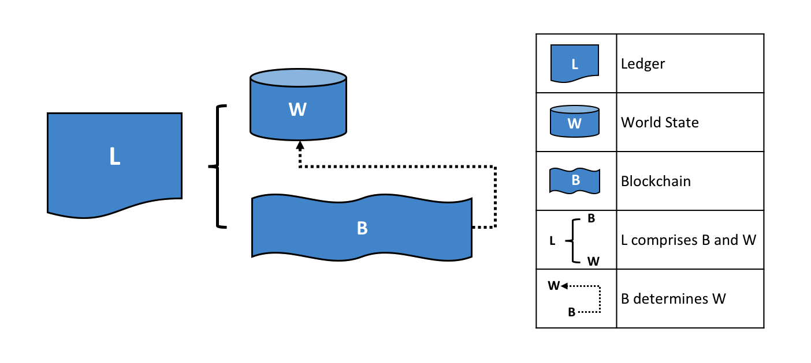
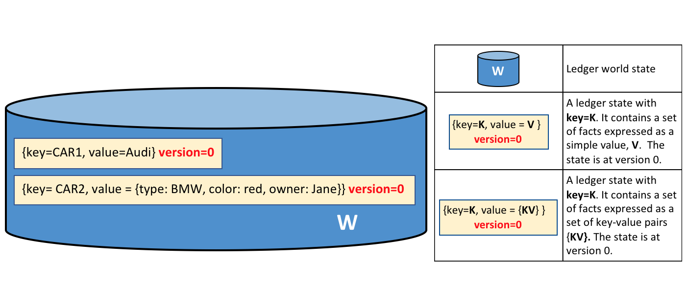
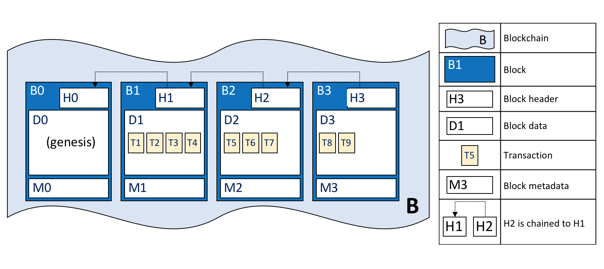
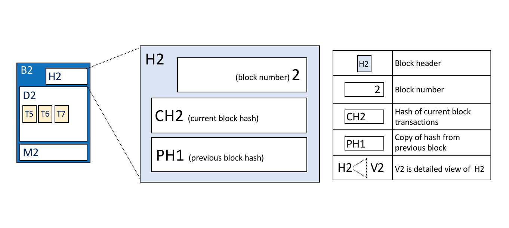
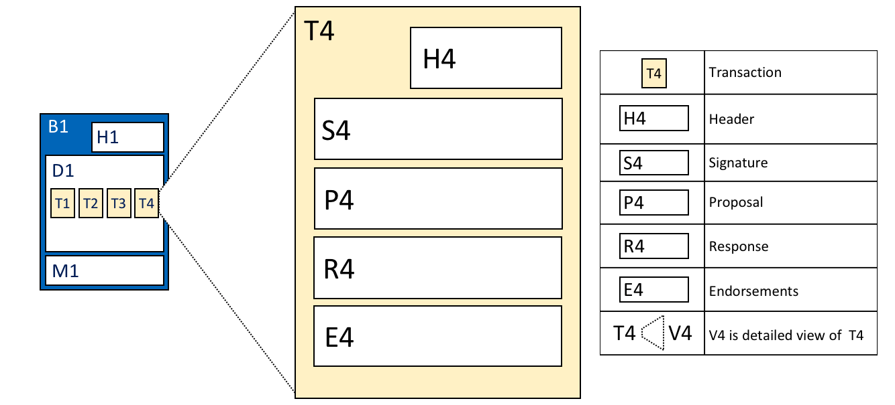
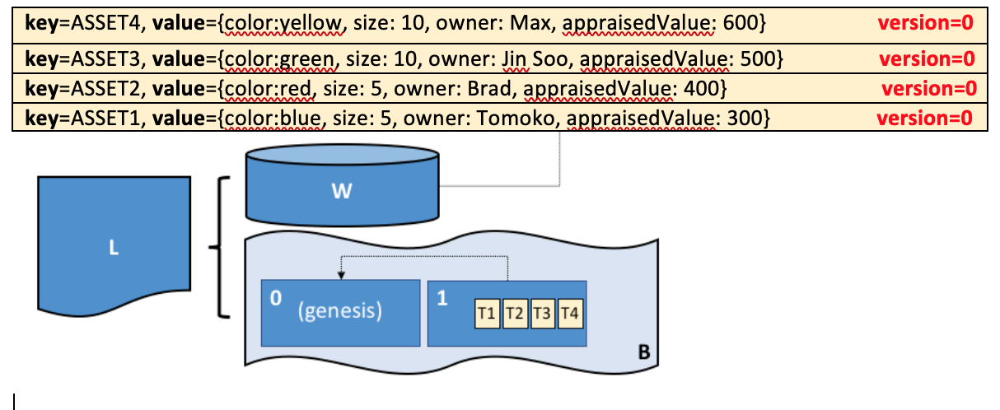

Ledger¶
Audience: Architects, Application and smart contract developers, administrators
A ledger is a key concept in Hyperledger Fabric; it stores important factual information about business objects; both the current value of the attributes of the objects, and the history of transactions that resulted in these current values.
In this topic, we're going to cover:
- What is a Ledger?
- Storing facts about business objects
- A blockchain ledger
- The world state
- The blockchain data structure
- How blocks are stored in a blockchain
- Transactions
- World state database options
- The Basic example ledger
- Ledgers and namespaces
- Ledgers and channels
What is a Ledger?¶
A ledger contains the current state of a business as a journal of transactions. The earliest European and Chinese ledgers date from almost 1000 years ago, and the Sumerians had stone ledgers 4000 years ago -- but let's start with a more up-to-date example!
You're probably used to looking at your bank account. What's most important to you is the available balance -- it's what you're able to spend at the current moment in time. If you want to see how your balance was derived, then you can look through the transaction credits and debits that determined it. This is a real life example of a ledger -- a state (your bank balance), and a set of ordered transactions (credits and debits) that determine it. Hyperledger Fabric is motivated by these same two concerns -- to present the current value of a set of ledger states, and to capture the history of the transactions that determined these states.
Ledgers, Facts, and States¶
A ledger doesn't literally store business objects -- instead it stores facts about those objects. When we say "we store a business object in a ledger" what we really mean is that we're recording the facts about the current state of an object, and the facts about the history of transactions that led to the current state. In an increasingly digital world, it can feel like we're looking at an object, rather than facts about an object. In the case of a digital object, it's likely that it lives in an external datastore; the facts we store in the ledger allow us to identify its location along with other key information about it.
While the facts about the current state of a business object may change, the history of facts about it is immutable, it can be added to, but it cannot be retrospectively changed. We're going to see how thinking of a blockchain as an immutable history of facts about business objects is a simple yet powerful way to understand it.
Let's now take a closer look at the Hyperledger Fabric ledger structure!
The Ledger¶
In Hyperledger Fabric, a ledger consists of two distinct, though related, parts -- a world state and a blockchain. Each of these represents a set of facts about a set of business objects.
Firstly, there's a world state -- a database that holds current values of a set of ledger states. The world state makes it easy for a program to directly access the current value of a state rather than having to calculate it by traversing the entire transaction log. Ledger states are, by default, expressed as key-value pairs, and we'll see later how Hyperledger Fabric provides flexibility in this regard. The world state can change frequently, as states can be created, updated and deleted.
Secondly, there's a blockchain -- a transaction log that records all the changes that have resulted in the current world state. Transactions are collected inside blocks that are appended to the blockchain -- enabling you to understand the history of changes that have resulted in the current world state. The blockchain data structure is very different to the world state because once written, it cannot be modified; it is immutable.

A Ledger L comprises blockchain B and world state W, where blockchain B determines world state W. We can also say that world state W is derived from blockchain B.It's helpful to think of there being one logical ledger in a Hyperledger Fabric network. In reality, the network maintains multiple copies of a ledger -- which are kept consistent with every other copy through a process called consensus. The term Distributed Ledger Technology (DLT) is often associated with this kind of ledger -- one that is logically singular, but has many consistent copies distributed throughout a network.
Let's now examine the world state and blockchain data structures in more detail.
World State¶
The world state holds the current value of the attributes of a business object as a unique ledger state. That's useful because programs usually require the current value of an object; it would be cumbersome to traverse the entire blockchain to calculate an object's current value -- you just get it directly from the world state.

A ledger world state containing two states. The first state is: key=CAR1 and value=Audi. The second state has a more complex value: key=CAR2 and value={model:BMW, color=red, owner=Jane}. Both states are at version 0.A ledger state records a set of facts about a particular business object. Our example shows ledger states for two cars, CAR1 and CAR2, each having a key and a value. An application program can invoke a smart contract which uses simple ledger APIs to get, put and delete states. Notice how a state value can be simple (Audi...) or compound (type:BMW...). The world state is often queried to retrieve objects with certain attributes, for example to find all red BMWs.
The world state is implemented as a database. This makes a lot of sense because a database provides a rich set of operators for the efficient storage and retrieval of states. We'll see later that Hyperledger Fabric can be configured to use different world state databases to address the needs of different types of state values and the access patterns required by applications, for example in complex queries.
Applications submit transactions which capture changes to the world state, and these transactions end up being committed to the ledger blockchain. Applications are insulated from the details of this consensus mechanism by the Hyperledger Fabric SDK and peer Gateway; they merely request invocation of a smart contract, and are notified when the transaction has been included in the blockchain (whether valid or invalid). The key design point is that only transactions that are signed by the required set of endorsing organizations will result in an update to the world state. If a transaction is not signed by sufficient endorsers, it will not result in a change of world state.
You'll also notice that a state has a version number, and in the diagram above, states CAR1 and CAR2 are at their starting versions, 0. The version number is for internal use by Hyperledger Fabric, and is incremented every time the state changes. The version is checked whenever the state is updated to make sure the current states matches the version at the time of endorsement. This ensures that the world state is changing as expected; that there has not been a concurrent update.
Finally, when a ledger is first created, the world state is empty. Because any transaction which represents a valid change to world state is recorded on the blockchain, it means that the world state can be re-generated from the blockchain at any time. This can be very convenient -- for example, the world state is automatically generated when a peer is created. Moreover, if a peer fails abnormally, the world state can be regenerated on peer restart, before transactions are accepted.
Blockchain¶
Let's now turn our attention from the world state to the blockchain. Whereas the world state contains a set of facts relating to the current state of a set of business objects, the blockchain is a historical record of the facts about how these objects arrived at their current states. The blockchain has recorded every previous version of each ledger state and how it has been changed.
The blockchain is structured as sequential log of interlinked blocks, where each block contains a sequence of transactions, each transaction representing a query or update to the world state. The exact mechanism by which transactions are ordered is discussed elsewhere; what's important is that block sequencing, as well as transaction sequencing within blocks, is established when blocks are first created by a Hyperledger Fabric component called the ordering service.
Each block's header includes a hash of the block's transactions, as well a hash of the prior block's header. In this way, all transactions on the ledger are sequenced and cryptographically linked together. This hashing and linking makes the ledger data very secure. Even if one node hosting the ledger was tampered with, it would not be able to convince all the other nodes that it has the 'correct' blockchain because the ledger is distributed throughout a network of independent nodes.
The blockchain is always implemented as a file, in contrast to the world state, which uses a database. This is a sensible design choice as the blockchain data structure is heavily biased towards a very small set of simple operations. Appending to the end of the blockchain is the primary operation, and query is currently a relatively infrequent operation.
Let's have a look at the structure of a blockchain in a little more detail.

A blockchain B containing blocks B0, B1, B2, B3. B0 is the first block in the blockchain, the genesis block.In the above diagram, we can see that block B2 has a block data D2 which contains all its transactions: T5, T6, T7.
Most importantly, B2 has a block header H2, which contains a cryptographic hash of all the transactions in D2 as well as a hash of H1. In this way, blocks are inextricably and immutably linked to each other, which the term blockchain so neatly captures!
Finally, as you can see in the diagram, the first block in the blockchain is called the genesis block. It's the starting point for the ledger, though it does not contain any user transactions. Instead, it contains a configuration transaction containing the initial state of the network channel (not shown). We discuss the genesis block in more detail when we discuss the blockchain network and channels in the documentation.
Blocks¶
Let's have a closer look at the structure of a block. It consists of three sections
- Block Header
This section comprises three fields, written when a block is created.
-
Block number: An integer starting at 0 (the genesis block), and increased by 1 for every new block appended to the blockchain.
-
Current Block Hash: The hash of all the transactions contained in the current block.
-
Previous Block Header Hash: The hash from the previous block header.
These fields are internally derived by cryptographically hashing the block data. They ensure that each and every block is inextricably linked to its neighbour, leading to an immutable ledger.

Block header details. The header H2 of block B2 consists of block number 2, the hash CH2 of the current block data D2, and the hash of the prior block header H1.- Block Data
This section contains a list of transactions arranged in order. It is written when the block is created by the ordering service. These transactions have a rich but straightforward structure, which we describe later in this topic.
- Block Metadata
This section contains the certificate and signature of the block creator which is used to verify the block by network nodes. Subsequently, the block committer adds a valid/invalid indicator for every transaction into a bitmap that also resides in the block metadata, as well as a hash of the cumulative state updates up until and including that block, in order to detect a state fork. Unlike the block data and header fields, this section is not an input to the block hash computation.
Transactions¶
As we've seen, a transaction captures changes to the world state. Let's have a look at the detailed blockdata structure which contains the transactions in a block.

Transaction details. Transaction T4 in blockdata D1 of block B1 consists of transaction header, H4, a transaction signature, S4, a transaction proposal P4, a transaction response, R4, and a list of endorsements, E4.In the above example, we can see the following fields:
- Header
This section, illustrated by H4, captures some essential metadata about the transaction -- for example, the name of the relevant chaincode, and its version.
- Signature
This section, illustrated by S4, contains a cryptographic signature, created by the client application. This field is used to check that the transaction details have not been tampered with, as it requires the application's private key to generate it.
- Proposal
This field, illustrated by P4, encodes the input parameters supplied by an application to the smart contract which creates the proposed ledger update. When the smart contract runs, this proposal provides a set of input parameters, which, in combination with the current world state, determines the new world state.
- Response
This section, illustrated by R4, captures the before and after values of the world state, as a Read Write set (RW-set). It's the output of a smart contract, and if the transaction is successfully validated, it will be applied to the ledger to update the world state.
- Endorsements
As shown in E4, this is a list of signed transaction responses from each required organization sufficient to satisfy the endorsement policy. You'll notice that, whereas only one transaction response is included in the transaction, there are multiple endorsements. That's because each endorsement effectively encodes its organization's particular transaction response -- meaning that there's no need to include any transaction response that doesn't match sufficient endorsements as it will be rejected as invalid, and not update the world state.
That concludes the major fields of the transaction -- there are others, but these are the essential ones that you need to understand to have a solid understanding of the ledger data structure.
World State database options¶
The world state is physically implemented as a database, to provide simple and efficient storage and retrieval of ledger states. As we've seen, ledger states can have simple or compound values, and to accommodate this, the world state database implementation can vary, allowing these values to be efficiently implemented. Options for the world state database currently include LevelDB and CouchDB.
LevelDB is the default and is particularly appropriate when ledger states are simple key-value pairs. A LevelDB database is co-located with the peer node -- it is embedded within the same operating system process.
CouchDB is a particularly appropriate choice when ledger states are structured as JSON documents because CouchDB supports the rich queries and update of richer data types often found in business transactions. Implementation-wise, CouchDB runs in a separate operating system process, but there is still a 1:1 relation between a peer node and a CouchDB instance. All of this is invisible to a smart contract. See CouchDB as the StateDatabase for more information on CouchDB.
In LevelDB and CouchDB, we see an important aspect of Hyperledger Fabric -- it is pluggable. The world state database could be a relational data store, or a graph store, or a temporal database. This provides great flexibility in the types of ledger states that can be efficiently accessed, allowing Hyperledger Fabric to address many different types of problems.
Example Ledger: Basic Asset Transfer¶
As we end this topic on the ledger, let's have a look at a sample ledger. If you've run the basic asset transfer sample application, then you've created this ledger.
The basic sample app creates a set of 6 assets each with a unique identity; a different color, size, owner, and appraised value. Here's what the ledger looks like after the first four assets have been created.

The ledger, L, comprises a world state, W and a blockchain, B. W contains four states with keys: ASSET1, ASSET2, ASSET3, and ASSET4. B contains two blocks, 0 and 1. Block 1 contains four transactions: T1, T2, T3, T4.We can see that the world state contains states that correspond to ASSET1, ASSET2, ASSET3, and ASSET4. ASSET1 has a value which indicates that it is a blue with size 5, currently owned by Tomoko, and we can see similar states and values for the other cars. Moreover, we can see that all car states are at version number 0, indicating that this is their starting version number -- they have not been updated since they were created.
We can also see that the blockchain contains two blocks. Block 0 is the genesis block, though it does not contain any transactions that relate to cars. Block 1 however, contains transactions T1, T2, T3, T4 and these correspond to transactions that created the initial states for ASSET1 to ASSET4 in the world state. We can see that block 1 is linked to block 0.
We have not shown the other fields in the blocks or transactions, specifically headers and hashes. If you're interested in the precise details of these, you will find a dedicated reference topic elsewhere in the documentation. It gives you a fully worked example of an entire block with its transactions in glorious detail -- but for now, you have achieved a solid conceptual understanding of a Hyperledger Fabric ledger. Well done!
Namespaces¶
Even though we have presented the ledger as though it were a single world state and single blockchain, that's a little bit of an over-simplification. In reality, each chaincode has its own world state that is separate from all other chaincodes. World states are in a namespace so that only smart contracts within the same chaincode can access a given namespace.
A blockchain is not namespaced. It contains transactions from many different smart contract namespaces.
Let's now look at how the concept of a namespace is applied within a Hyperledger Fabric channel.
Channels¶
In Hyperledger Fabric, each channel has a completely separate ledger. This means a completely separate blockchain, and completely separate world states, including namespaces. It is possible for applications and smart contracts to communicate between channels so that ledger information can be accessed between them.
More information¶
See the Transaction Flow, Read-Write set semantics and CouchDB as the StateDatabase topics for a deeper dive on transaction flow, concurrency control, and the world state database.